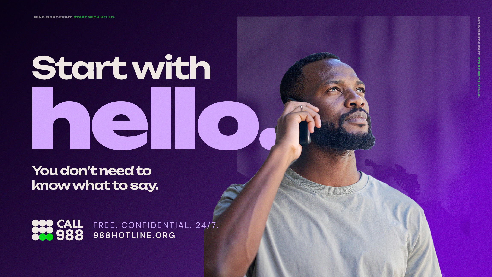
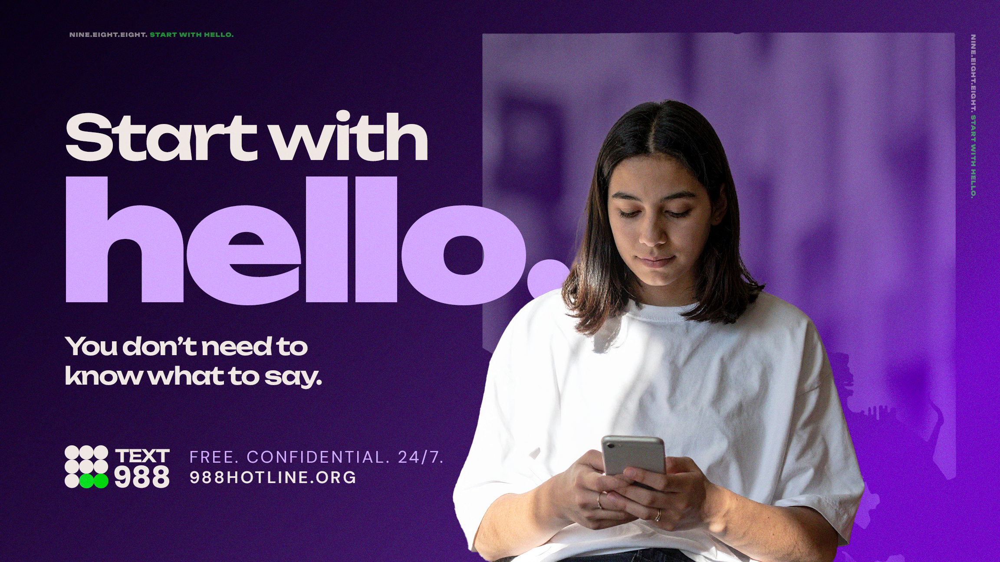
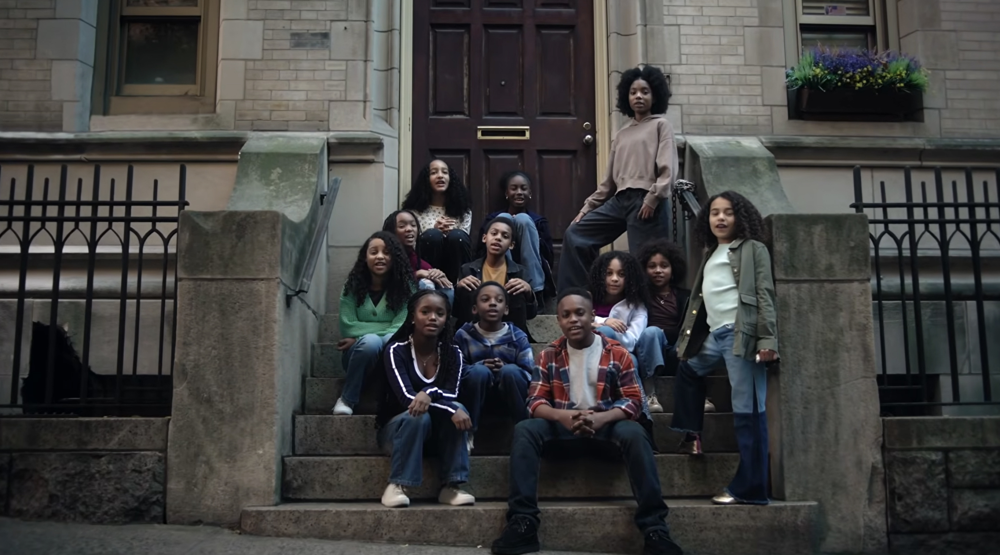
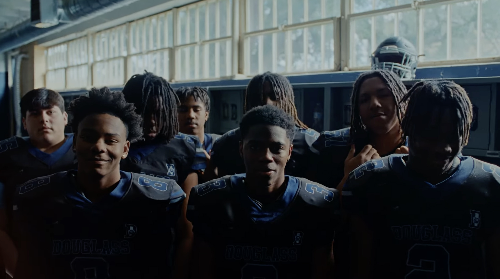
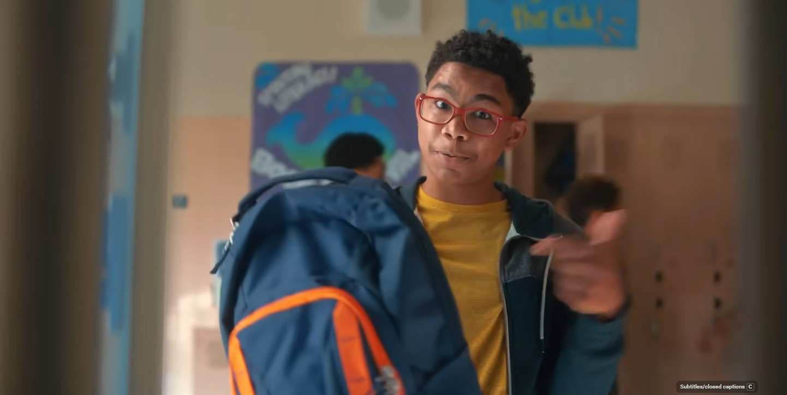
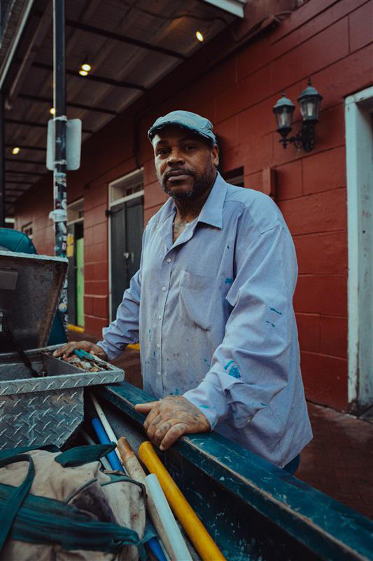
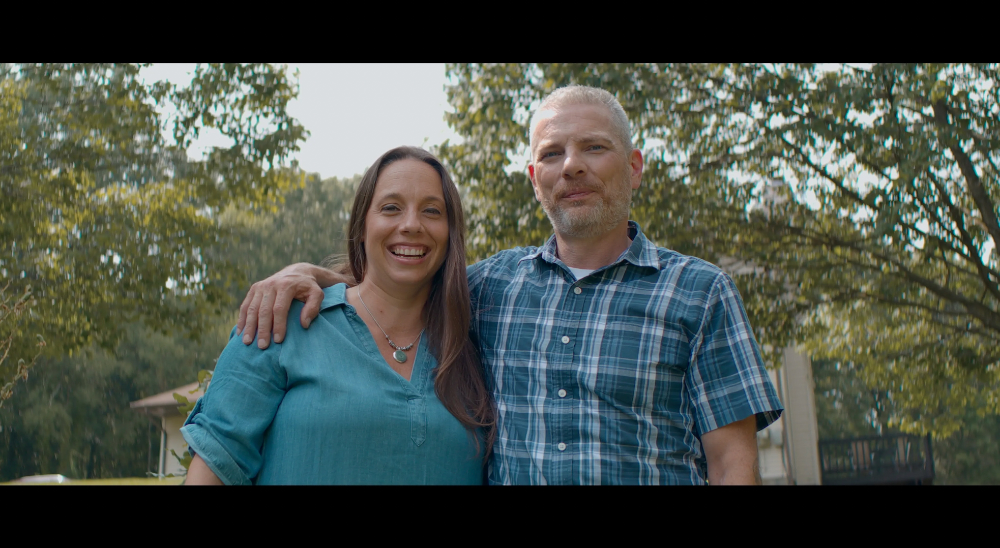
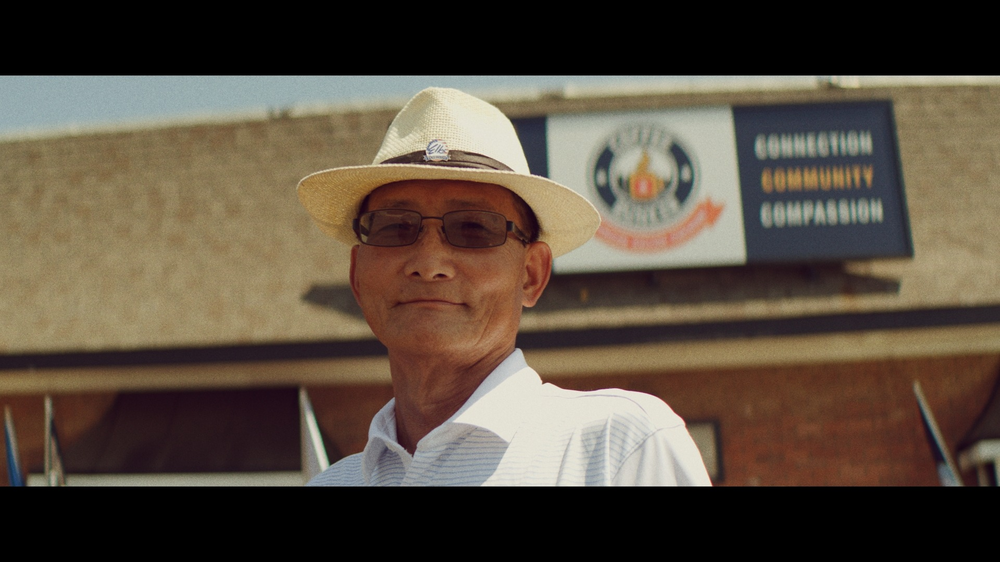

The first thing you say when a 988 counselor picks up is hello. That's it. You don't need to explain yourself or have the right words ready. Saying hello is the first step, and everything after it gets easier from there.
This concept responds directly to the research: the people who need 988 most are often the people who don't think they qualify. Whether someone is in crisis or just carrying something they haven't told anyone, the campaign works to lower the stakes of reaching out. Three ways in — call, text, or chat — each one designed to meet people where they are and make starting as easy as possible.
988 is here for all of it. For anxiety, grief, and hard days. For people experiencing a mental health emergency. For someone worried about a neighbor. For a parent scared for their kid. For a friend who doesn't know what else to do. "Start with Hello" holds all of that without drawing a line between who qualifies and who doesn't.

Lowering the stakes. BHSB's top finding: people don't call because they don't think their problem is big enough. The campaign will be built to remove that threshold at every touchpoint.
No clinical language. Everyday words like "anxious," "grieving," and "overwhelmed" will make 988 feel accessible to everyone.
Confidentiality is a top concern. Across demographics surveyed, fear of being found out was a primary barrier. Messaging will address privacy and trust directly and consistently.
Human, not institutional. Distrust of systems is heightened across Baltimore, particularly in communities already navigating other pressures. The tone will feel like a neighbor, not a government program.
Hopeful, not heavy. Research showed that despairing visuals cause people to disengage. Purple as primary color will balance warmth with seriousness throughout the visual system.
Creative tailored for younger audiences, with text and chat as primary entry points. Sports figures and trusted community voices as potential messengers.
Practical framing, phone call as primary entry point. Community figures and athletes as trusted messengers. Stigma reduction is especially important for this audience.
Messaging will center affirming, culturally competent language. The dedicated 988 LGBTQ+ youth line is available 24/7 and worth featuring prominently for this audience.
988 handles emergencies too. The campaign will make clear that 988 is appropriate across the full spectrum, so no one hesitates when it matters most.
Audience priorities and messaging approaches will be refined through community co-design sessions and additional research prior to final creative development.






VO: It starts with...
Neighbors: ...a call.
Youth Sports Team: ...a text.
Young Student: ...a chat.
Teacher: It starts with...
Restaurant Worker: ...you.
A Mother: ...me.
A Group: ...us.
Person from Frame One: Hello?
Narrator: It starts with hello. Everyone falls down, but we'll always pick up.
The following represents potential activations for this campaign. Specific channels, partners, and formats will be confirmed through research, community co-design, and client alignment prior to final campaign development.
30 and 60 second cuts of the overarching PSA distributed across broadcast and streaming platforms.
Radio remains one of the strongest reach channels across Maryland demographics and age groups.
Placements in high-need ZIP codes, with the potential to tailor creative to specific communities and neighborhoods.
Social and digital content tailored by audience and geography.
Printed materials distributed through trusted in-person channels where communities already gather.
Baltimore athletes as potential campaign voices.
Reaching younger audiences through channels and voices they already trust. Text and chat positioned as primary entry points.
"Start with Hello." as a potential mural phrase in targeted neighborhoods. Potential activation to coordinate with Mental Health America's annual light-up-green campaign each May.
Creative and messaging tailored to relevant local moments — HonFest, ArtScape, community events across Maryland counties. For example, "Start here, hon." as a Hampden-specific variation.
Two additional concept directions. These approaches address the same brief differently, each still informed by the research. Whichever direction moves forward will ultimately be pressure-tested through focus groups and community input before final development.
The blank fills with the action for each audience, or rotates in the same spot in animated applications. Each version targets a different entry point.
Three executions, one platform. Don't Wait. Call. 988. / Don't Wait. Text. 988. / Don't Wait. Chat. 988. Each version targets a different entry point.
There is an opportunity for this concept to be a jingle or memorable audio. BGE's downed wire campaign is a useful reference — a serious public safety message that stuck with people because it was set to music. "Don't Wait. Call. 988." has the same potential if set to music.
Grounded in BHSB's finding that people don't call because they don't think their problem is big enough. Strongest for audiences who need a push more than a permission slip.
For when the answer is no — call, text, or chat 988.
"You good? For when the answer is no — call, text, or chat 988." Leverages a phrase already in daily use. Carries BHSB's existing "Because we all need help sometimes" forward with new energy and local specificity.
Trusted community voices asking the question outperform institutional messaging. Strongest for social and community activation channels.